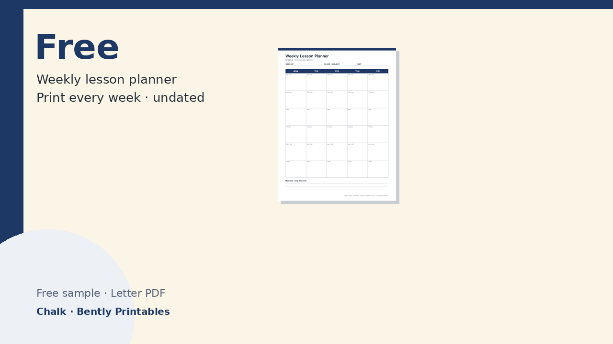
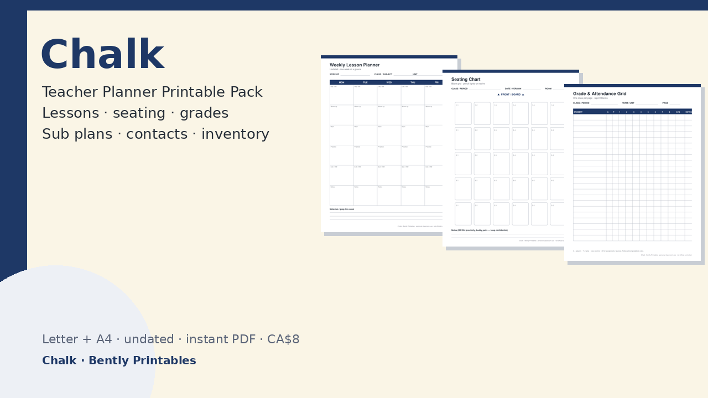

Plan Monday–Friday lessons at a glance — objectives, warm-up, main, practice, exit ticket. Undated, so you can print it every week.
Download free PDF
~16 pages in Letter and A4: weekly lesson planners, daily schedule, seating chart, grade & attendance grids, parent contact log, privacy-minded student concern log, sub plans cover + substitution notes, meeting notes, supply inventory, and blank masters. CA$8.
Get Chalk, CA$8
Prefer the shop? See it on Gumroad.
© Bently Printables · personal classroom use · not official curriculum